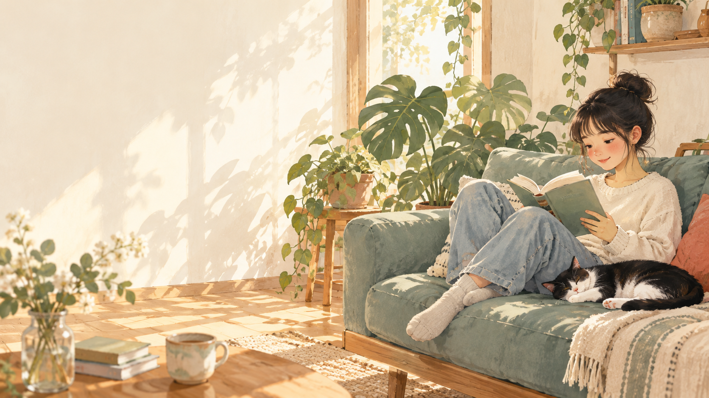

先理解情境
先聽見可能需要被討論的日常困擾與支持情境，不預設已有答案。
公益研究 · 起步中的子專案
少年仔安啦會客室是一個尚在起步與整理中的名稱。我們先把可討論的陪伴方向、材料與合作邊界放在清楚的位置。
本頁是初步說明，不提供對話、危機服務、治療建議或個案處理，也不蒐集個人資料。

先聽見可能需要被討論的日常困擾與支持情境，不預設已有答案。
後續若有任何合作形式，將先確認適切性、角色、同意與人為審閱方式。
功能、參與形式與材料仍待建置與驗證，不在此頁作成效或服務宣稱。
目前可先回到 HAIC 工作流程頁，理解「計畫、準備材料、執行中、已驗證」的共同整理方式。
開啟工作流程 →